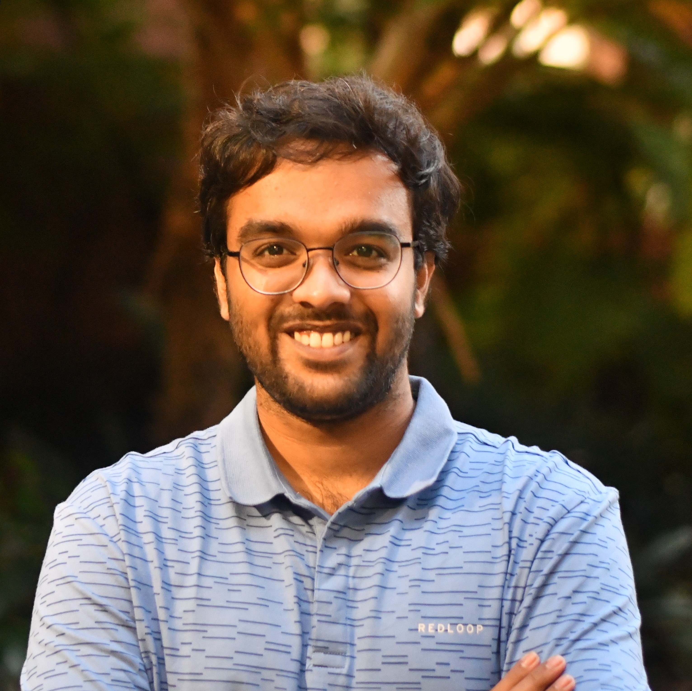

Gokul B Nair
I am a PhD candidate at the QUT Centre for Robotics, working under the supervision of Dr. Tobias Fischer and Prof. Michael Milford. My research is centered on harnessing the capabilities of event-cameras to advance visual place recognition in mobile robots. By fusing the neuromorphic attributes of these sensors with cutting-edge computer vision algorithms, I strive to enhance the robustness and efficiency of robotic systems operating in complex environments.
Prior to my doctoral journey, I worked in the industry as a Robotics Engineer. I worked at Clutterbot Inc. in Bengaluru and Addverb Technologies in Noida. These roles provided me with a practical understanding of robotic systems and their real-world applications.
I graduated in 2020 with a B.Tech and MS by Research (dual-degree) in Computer Science from IIIT-Hyderabad. My master's thesis work, conducted under the supervision of Prof. K. Madhava Krishna at the Robotics Research Centre, IIIT-Hyderabad, explored pose-graph optimizations for monocular SLAM, particularly within the realm of autonomous driving.
My goal is to ensure that robotic systems can navigate and understand their surroundings with unprecedented accuracy and efficiency, continually striving for improvements that benefit both the field and my own expertise.